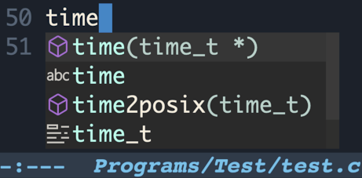
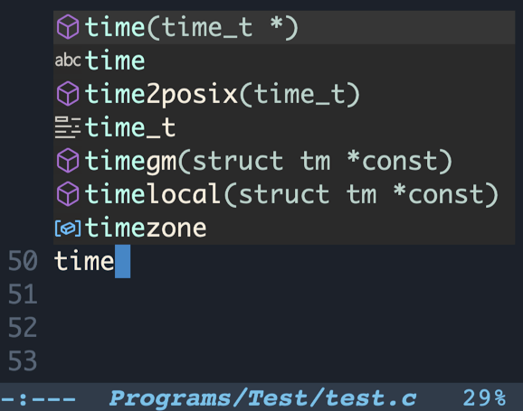

Frontends
Company is packaged with several frontends and provides a predefined
set of enabled frontends. A list of the enabled frontends can be
changed by configuring the user option company-frontends.
Each frontend is simply a function that receives a command and acts accordingly to it: outputs candidates, hides its output, refreshes displayed data, and so on.
All of the Company frontends can be categorized by the type of the output into the three groups: tooltip-, preview-, and echo- frontends. We overview these groups in the first sections of this chapter. The sections that follow are dedicated to the ways the displayed candidates can be searched, filtered, and quick-accessed.
Tooltip Frontends
This group of frontends displays completion candidates in an overlayed tooltip (aka pop-up). Company provides three tooltip frontends, listed below.
- Function: company-pseudo-tooltip-unless-just-one-frontend ¶
This is one of the default frontends. It starts displaying a tooltip only if more than one completion candidate is available, which nicely combines — and it is done so by default — with
company-preview-if-just-one-frontend, Preview Frontends.
- Function: company-pseudo-tooltip-frontend ¶
This frontend outputs a tooltip for any number of completion candidates.
- Function: company-pseudo-tooltip-unless-just-one-frontend-with-delay ¶
-
This is a peculiar frontend, that displays a tooltip only if more than one candidate is available, and only after a delay. The delay can be configured with the user option
company-tooltip-idle-delay. A typical use case for plugging in this frontend would be displaying a tooltip only on a manual request (when needed), as shown in the following example:(setq company-idle-delay 0 company-tooltip-idle-delay 10 company-require-match nil company-frontends '(company-pseudo-tooltip-unless-just-one-frontend-with-delay company-preview-frontend company-echo-metadata-frontend) company-backends '(company-capf)) (global-set-key (kbd "<tab>") (lambda () (interactive) (let ((company-tooltip-idle-delay 0.0)) (company-complete) (and company-candidates (company-call-frontends 'post-command)))))
User Options
To change the tooltip frontends configuration, adjust the following user options.
- User Option: company-tooltip-align-annotations ¶
-
An annotation is a string that carries additional information about a candidate; such as a data type, function arguments, or whatever a backend appoints to be a valuable piece of information about a candidate. By default, the annotations are shown right beside the candidates. Setting the option value to
taligns annotations to the right side of the tooltip.(setq company-tooltip-align-annotations t)

- User Option: company-tooltip-annotation-padding ¶
Adds left padding to the candidates’ annotations. It is disabled by default. If
company-tooltip-align-annotationsis enabled,company-tooltip-annotation-paddingdefines the minimum spacing between a candidate and annotation, with the default value of 1.(setq company-tooltip-annotation-padding 1)
- User Option: company-tooltip-limit ¶
Controls the maximum number of the candidates shown simultaneously in the tooltip (the default value is
10). When the number of the available candidates is larger than this option’s value, Company paginates the results.(setq company-tooltip-limit 4)

- User Option: company-tooltip-offset-display ¶
Use this option to choose in which way to output paginated results. The default value is ‘scrollbar’. Another supported value is ‘lines’; choose it to show the quantity of the candidates not displayed by the current tooltip page.
(setq company-tooltip-offset-display 'lines)

- User Option: company-tooltip-minimum ¶
This user option acts only when a tooltip is shown close to the bottom of a window. It guarantees visibility of this number of completion candidates below point. When the number of lines between point and the bottom of a window is less than
company-tooltip-minimumvalue, the tooltip is displayed above point. (setq company-tooltip-minimum 4)
- User Option: company-tooltip-flip-when-above ¶
This is one of the fancy features Company has to suggest. When this setting is enabled, no matter if a tooltip is shown above or below point, the candidates are always listed starting near point. (Putting it differently, the candidates are mirrored horizontally if a tooltip changes its position, instead of being commonly listed top-to-bottom.)
(setq company-tooltip-flip-when-above t)

- User Option: company-tooltip-minimum-width ¶
Sets the minimum width of a tooltip, excluding the margins and the scroll bar. Changing this value especially makes sense if a user navigates between tooltip pages. Keeping this value at the default
0allows Company to always adapt the width of the tooltip to the longest shown candidate. Enlargingcompany-tooltip-minimum-widthprevents possible significant shifts in the width of the tooltip when navigating to the next/previous tooltip page. (For an alternate solution, seecompany-tooltip-width-grow-only.)
- User Option: company-tooltip-width-grow-only ¶
This is another way to restrict auto-adaptation of the tooltip width (another is by adjusting
company-tooltip-minimum-widthvalue) when navigating between the tooltip pages.
- User Option: company-tooltip-maximum-width ¶
This user option controls the maximum width of the tooltip inner area. By default, its value is pseudo-limitless, potentially permitting the output of extremely long candidates. But if long lines become an issue, set this option to a smaller number, such as
60or70.
- User Option: company-tooltip-margin ¶
-
Controls the width of the margin on the sides of the tooltip inner area. If
company-format-margin-functionis set,company-tooltip-margindefines only the right margin.(setq company-tooltip-margin 3)

Candidates Icons
An icon is an image or a text that represents a candidate’s
kind; it is displayed in front of a candidate. The term kind
here stands for a high-level category a candidate fits into. (Such as
‘array’, ‘function’, ‘file’, ‘string’,
‘color’, etc. For an extended list of the possible kinds,
see the user option company-text-icons-mapping or the variable
company-vscode-icons-mapping.)
- User Option: company-format-margin-function ¶
-
Allows setting a function to format the left margin of a tooltip inner area; namely, to output candidate’s icons. The predefined formatting functions are listed below. A user may also set this option to a custom function. To disable left margin formatting, set the value of the option to
nil(this way control over the size of the left margin returns to the user optioncompany-tooltip-margin).
- Function: company-vscode-dark-icons-margin ¶
- Function: company-vscode-light-icons-margin ¶
-
These functions utilize VSCode dark and light theme icon sets 3. The related two user options are
company-icon-sizeandcompany-icon-margin.
- Function: company-text-icons-margin ¶
-
This function produces letters and symbols formatted according to the
company-text-icons-format. The rest of the user options affecting this function behavior are listed below.
- Function: company-dot-icons-margin ¶
-
This function produces a colored Unicode symbol of a circle formatted according to the
company-dot-icons-format. Other user options that affect the resulting output are listed below.
The following user options influence appearance of the text and dot icons.
- User Option: company-text-icons-mapping ¶
Lists candidates’ kinds with their corresponding icons configurations.
- User Option: company-text-face-extra-attributes ¶
A list of face attributes to be applied to the icons.
(setq company-text-face-extra-attributes '(:weight bold :slant italic))
- User Option: company-text-icons-add-background ¶
If this option is enabled, when an icon doesn’t have a background configured by
company-text-icons-mapping, then a generated background is applied.(setq company-text-icons-add-background t)

- Function: company-detect-icons-margin ¶
This is the default margin formatting function, that applies one of the
company-vscode-*-icons-marginfunctions if ‘vscode’ icons set is supported; otherwise applies acompany-text-icons-marginfunction.
Faces
Out-of-the-box Company defines and configures distinguished faces (see (emacs)Faces) for light and dark themes. Moreover, some of the built-in and third-party themes fine-tune Company to fit their palettes. That is why there’s often no real need to make such adjustments on a user side. However, this chapter presents some hints on where to start customizing Company interface.
Namely, the look of a tooltip is controlled by the
company-tooltip* named faces.
The following example hints how a user may approach tooltip faces customization:
(custom-set-faces '(company-tooltip ((t (:background "ivory" :foreground "MistyRose3")))) '(company-tooltip-selection ((t (:background "LemonChiffon1" :foreground "MistyRose4")))) '(company-tooltip-common ((t (:weight bold :foreground "pink1")))) '(company-scrollbar-fg ((t (:background "ivory3")))) '(company-scrollbar-bg ((t (:background "ivory2")))) '(company-tooltip-annotation ((t (:foreground "MistyRose2")))))

Preview Frontends
Frontends in this group output a completion candidate or a common part of the candidates temporarily inline, as if a word had already been completed 4.
- Function: company-preview-if-just-one-frontend ¶
This is one of the frontends enabled by default. This frontend outputs a preview if only one completion candidate is available; it is a good suit to be combined with
company-pseudo-tooltip-unless-just-one-frontend, Tooltip Frontends.
- Function: company-preview-frontend ¶
This frontend outputs the first of the available completion candidates inline for a preview.
- Function: company-preview-common-frontend ¶
As the name of this frontend suggests, it outputs for a preview only a common part of the candidates.
The look of the preview is controlled by the following faces:
company-preview, company-preview-common, and
company-preview-search.


Echo Frontends
The frontends listed in this section display information in the Emacs’s echo area, (emacs)Echo Area.
- Function: company-echo-metadata-frontend ¶
This frontend is a part of the predefined frontends set. Its responsibility is to output a short documentation string for a completion candidate in the echo area.

The last pair of the built-in frontends isn’t that commonly used and not as full-featured as the previously reviewed tooltip- and preview- frontends, but still, feel free to play with them and have some fun!
- Function: company-echo-frontend ¶
This frontend outputs all the available completion candidates in the echo area.

- Function: company-echo-strip-common-frontend ¶
It acts similarly to the previous frontend but outputs a common part of the candidates once for all of them.

- User Option: company-echo-truncate-lines ¶
This is the only echo frontends targeted setting. When enabled, the output is truncated to fit the echo area. This setting is set to
tby default.
To apply visual changes to the output of these frontends, configure
the faces company-echo and company-echo-common.
Candidates Search
By default, when company-mode is in action, a key binding C-s starts looking for matches to additionally typed characters among the displayed candidates. When a search is initiated, an indicator ‘Search: CHARACTERS’ is shown in the Emacs’s mode line.
To quit the search mode, hit C-g.
- User Option: company-search-regexp-function ¶
The value of this user option must be a function that interprets the search input. By default it is set to the function
regexp-quote, with looks for an exact match. Company defines several more functions suitable for this option. They are listed below.
- Function: company-search-words-regexp ¶
Searches for words separated with spaces in the given order.
- Function: company-search-words-in-any-order-regexp ¶
Searches for words separated with spaces in any order.
- Function: company-search-flex-regexp ¶
Searches for characters in the given order, with anything in between.
Search matches are distinguished by the company-tooltip-search
and company-tooltip-search-selection faces.

Filter Candidates
Candidates filtering is started by typing the default key binding C-M-s. Filtering acts on a par with the search (see Candidates Search), indicating its activation by the text ‘Filter: CHARACTERS’ in the mode line and influencing the displayed candidates. The difference is that the filtering, as its name suggests, keeps displaying only the matching candidates (in addition to distinguishing the matches with a face).
To quit the filtering, hit C-g. To toggle between search and filter states, use key binding C-o.

Quick Access a Candidate
Company provides a way to choose a candidate for completion without having to navigate to that candidate: by hitting one of the quick-access keys. By default, quick-access key bindings utilize a modifier META and one of the digits, such that pressing M-1 completes with the first candidate on the list and M-0 with the tenth candidate.
If company-show-quick-access is enabled, tooltip- and
echo- frontends show quick-access hints.
(setq company-show-quick-access 'left)


To customize the key bindings, either do it via Customization Interface (see Customization Interface) or use the following approach:
(custom-set-variables
'(company-quick-access-keys '("a" "o" "e" "u" "i"))
'(company-quick-access-modifier 'super))
A modifier should be one of meta, super, hyper,
control.
The following example applies a bit of customization and demonstrates how to change quick-access hints faces.
(setq company-show-quick-access t) (custom-set-faces '(company-tooltip-quick-access ((t (:foreground "pink1")))) '(company-tooltip-quick-access-selection ((t (:foreground "pink1" :slant italic)))))

Footnotes
(3)
SVG images support has to be enabled in Emacs for
these icons set to be used. The supported images types can be checked
with C-h v image-types. Before compiling Emacs, make sure
‘librsvg’ is installed on your system.
(4)
The candidates retrieved according to
non-prefix matches (see Terminology) may be shown in full
after point.